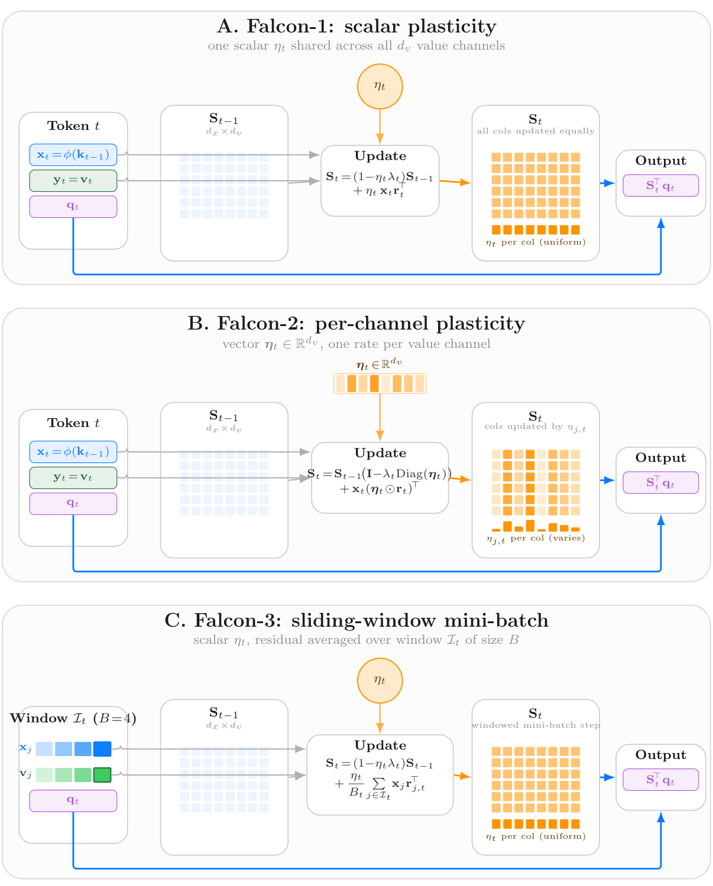
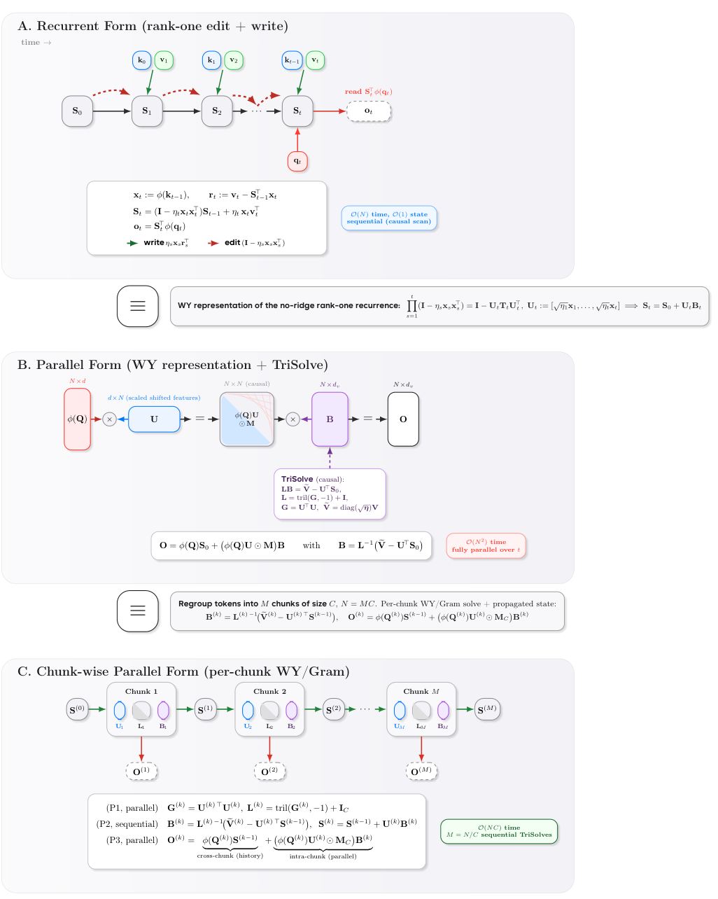
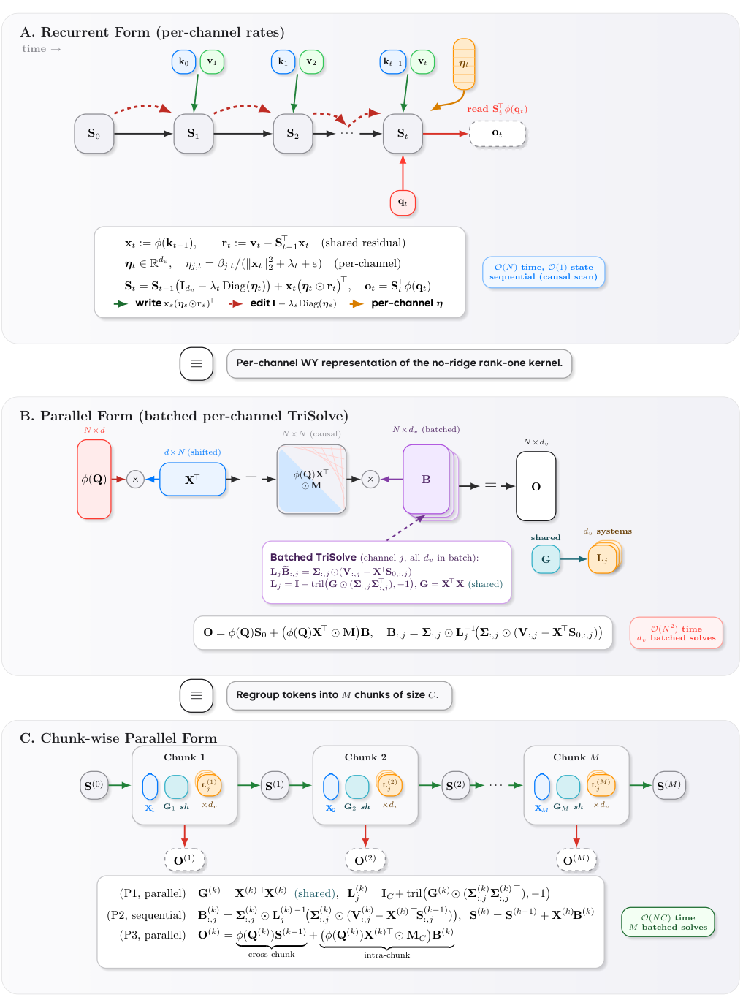
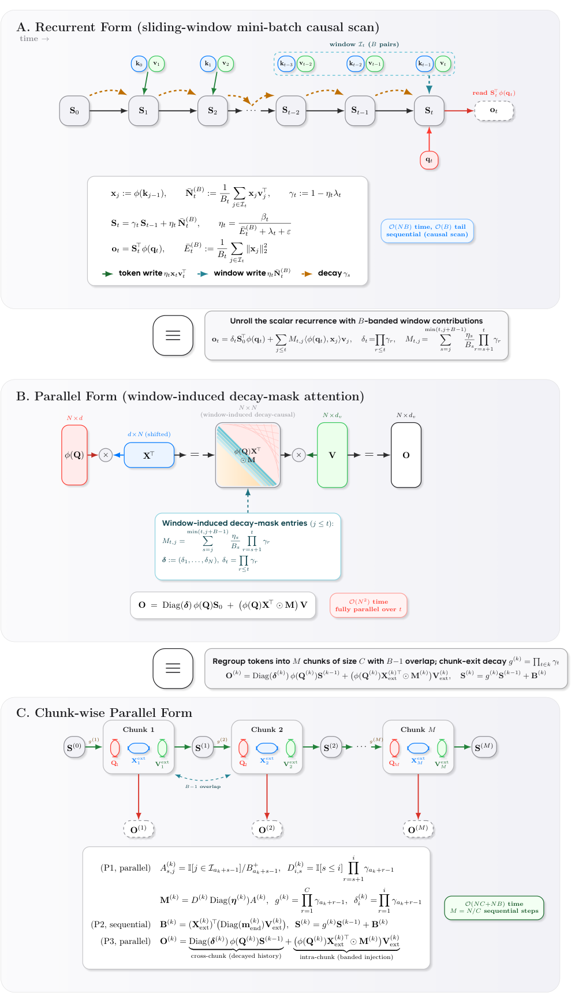
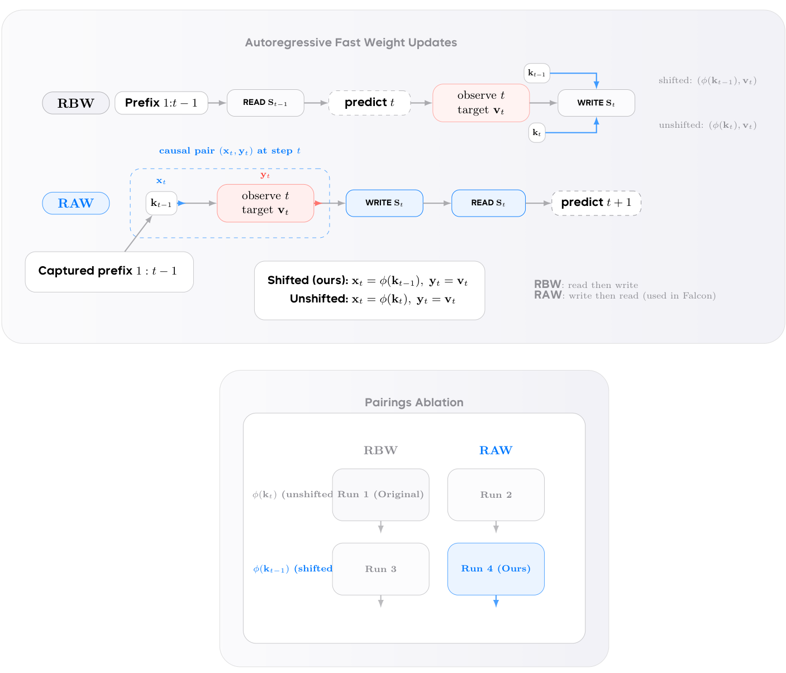

🗂️ 论文解读 · arXiv:2608.27763 · ByteDance Seed × Princeton × 清华（含姚期智）· 快速权重注意力 / Falcon 家族
这篇论文把「递归序列建模」重新理解为「带显式快速记忆目标的在线持续学习」，并导出一族归一化的快速权重更新规则（Falcon 系列）。关键洞察在于：在「读后写（read-after-write）」自回归语义下，与标准循环模型常用的同一步关联不同，训练所用的一致因果对其实是「前缀特征 → 新观测目标」，即 ϕ(k_t−1) → v_t。这一视角统一了标量、逐列、滑动窗口三种动力学，并分离了时间对齐、可塑性、遗忘、有界回看这四个因子，同时保持与 chunk-parallel（分块并行）训练兼容。

图 1：论文核心概览——读后写语义与 Falcon 快速权重更新
递归快速权重记忆（recurrent fast-weight memories）与选择性状态空间模型（如 Mamba）有一个共同点：它们把不断增长的上下文压缩进一个固定大小的递归状态，等价地把状态转移看作一种在线学习规则。作者从「读后写自回归语义」出发研究这条规则：要预测目标 y（即下一个特征所对应的输出），模型必须先读（隐式）写好的记忆，再基于预测误差进行更新。

图 2：状态转移 = 在线学习规则的示意
论文重点关注前缀预测目标（prefix-prediction objective）：在步 t 揭晓的本地快速记忆样例，是前缀对齐的对 (ϕ(k_t−1), v_t)。而常见的「同步关联 ϕ(k_t), v_t」虽保持因果，却是在优化一个不同的内部目标。作者据此分别导出：
① 回归族（squared-error，最小二乘回归）：Falcon-1（标量 NLMS 更新）、Falcon-2（逐列拓展）、Falcon-3（滑动窗口小批量更新）。
② 内积族（negative inner-product，负内积/对齐目标）：Falcon-1A / Falcon-2A / Falcon-3A，对应 Linear Attention 与 Mamba-2 的风格。
线性注意力 / DeltaNet 系通常使用同步对 (ϕ(k_t), v_t) 作为状态写入，这像一个「缓存式关联」。但在前缀预测的快速记忆目标下，真正被利用的合理训练对应是前缀写入特征与新观察到的目标：也就是用 ϕ(k_t−1) 去预测 v_t。作者证明了：在自回归的读-写分离语义下，不同步关联内部会优化一个不同的目标，而前缀对齐的变体才是与「读后写」学习一致的。

图 3：概念总览。(A) 常见快速权重规则绑定同步写入对，(B) Falcon-1/2 做"下一隐状态预测"，(C) Falcon-3 用滑动窗口小批量
与 softmax 注意力不同，快速权重递归对查询/键的范数很敏感：点积读出随 ||q||·||k|| 增长，加性（内积）写入随写入特征范数增长。为稳定读出与写入两路，尤其在长解码视野与混合精度下，作者引入显式特征缩放/归一化：
用 RMSNorm 对 (q_t, k_t) 投影做归一化（默认每分量量级保持 Θ(1)），这比常见 ΔNet 的 ℓ2 归一化在混合精度下明显更稳定。论文还设计了带缩放/收缩的更新，使衰减分数 α_t := η_t λ_t 由参数推导而非独立随意设定。

图 4：归一化快速权重递归示意

图 5：带缩放的特征与加性/内积写入的稳定性机制
Falcon-1（回归，标量）：对平方误差回归 + 岭惩罚做一阶（NLMS 稳定化）在线更新，收缩率若未被钳制，即为带正衰减的岭更新。
Falcon-2（回归，逐列）：把标量步长推广到每个值通道一个步长 η_t，实现逐通道的岭回归更新；论文给出分块并行前向算法（Algorithm 1），并在附录给出精确的 WY/Gram 代数与复杂度分析。

图 6：Falcon-2 分块并行前向的结构示意
Falcon-3 / Falcon-3A（滑动窗口小批量）：在活动窗口内对因果对做一次小批量回归（或内积）步骤；窗口名义大小为 B，实际大小 B_t ≤ B。这相当于对「最近的样例」做有界回看（bounded rehearsal）的在线梯度步。

图 7：滑动窗口小批量（Falcon-3）的窗口与目标对齐示意
Falcon-1A/2A/3A（内积族）：对齐目标改为负内积（+可选 L2 惩罚）。当 λ=0 时目标在 S 上线性、无有限极小，梯度下降退化为纯加性的 Hebbian 写入。它们的步长应理解为「能量归一化的写入增益」而非曲率匹配的分母。
在 FineWeb-Edu 验证困惑度（Table 1）上：Falcon-1.3 综合最强，困惑度 17.10；最强的基线是 Gated DeltaNet 17.32；内积族中 Falcon-1A.3 最优（17.40）。在 124M–130M 下游评测（Table 2）：Falcon-1A.2 零样本均值最佳（49.30），Falcon-1.3 循环一次性均值最佳（49.54）。

图 8：困惑度 / 下游任务对比
消融表明：QK-RMSNorm 相对 QK-ℓ2 归一化提升 FineWeb-Edu 困惑度；上下文条件的 η（而非 β）在零/一次样本均值上更优。总体验证了「对齐 + 归一化」的更新能在保持语言模型质量的同时带来受控的算术增益。
用变长多位数加法检验因果存储与外推（Table 3）：在训练宽度 1–32 位、测试 33–48 位的强迫教学中，Falcon-3A.3 外推最强，平均准确率 87.2，Falcon-1A.3 以 85.9 次之，两者都超过报告的基线（含 RetNet/LightningAttn 与 Transformer）。该实验用于隔离递归状态的内存写入行为，显示「移位 + 归一化」的更新在存储与进位传播主导时外推良好。

图 9：变长加法外推结果（Falcon 优于基线）
① 统一视角：把大量快速权重 / DeltaNet / SSM 的更新规则统一为重铸为在线持续学习（带显式快速记忆目标），并指出常见「同步写入」优化的内部目标与「读后写」前缀预测不一致。
② 归一化更新族：导出 Falcon-1/2/3（回归）与 Falcon-1A/2A/3A（内积）的规范化首阶更新，含滑动窗口小批量变体，天然兼容分块并行训练。
③ 分离持续学习因子：显式分离时间对齐、可塑性、遗忘、有界回看；在语言建模上保持竞争力，在内积族上显著改善算术长度外推。

图 10：Falcon 系列在语言建模 / 算术外推上的完整对比

图 11：额外消融与附录结果